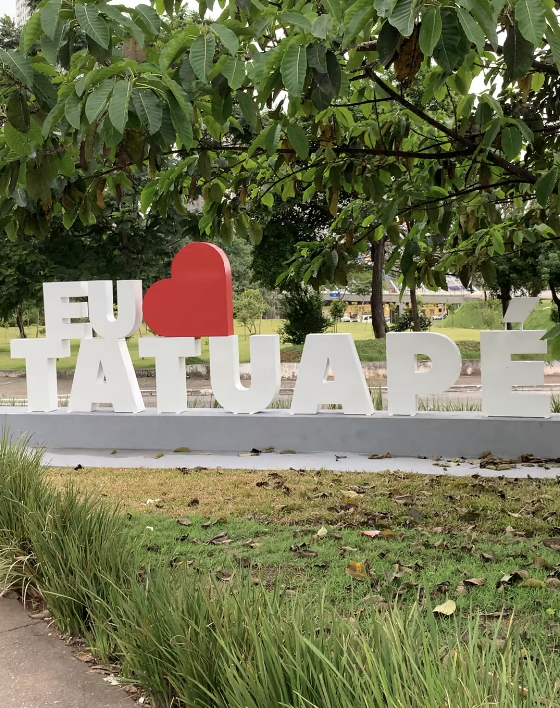
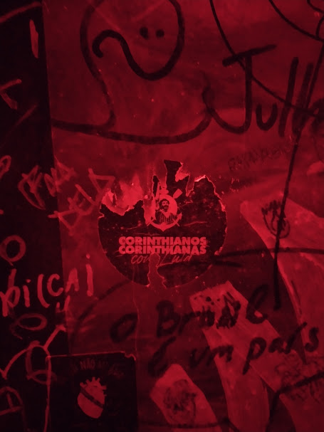
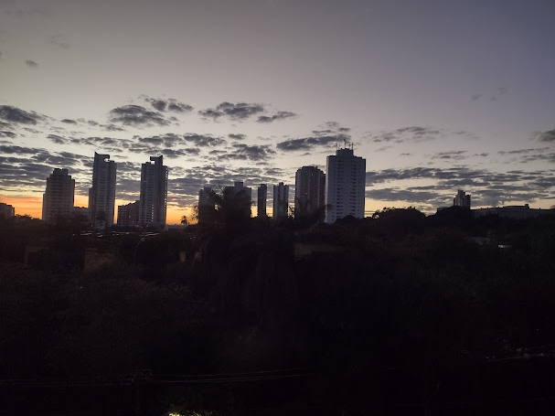
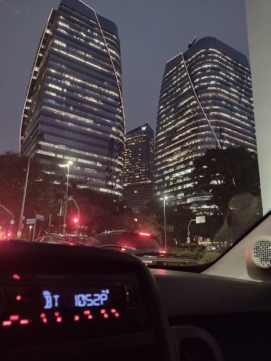
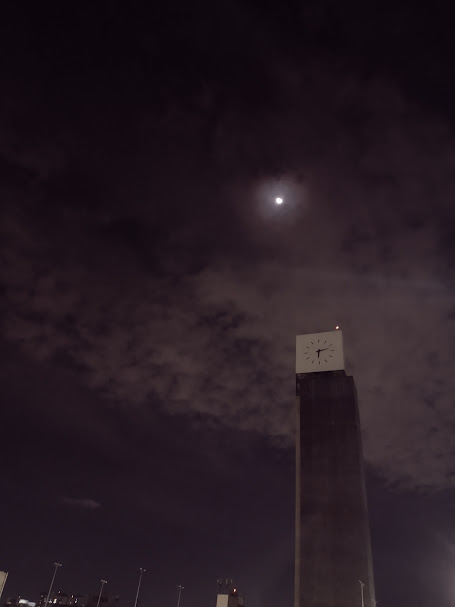

Eu ainda não conheço bem o assunto, mas tenho muito interesse em entender como os computadores conseguem interpretar imagens.
Para os computadores, imagens são apenas um conjunto de pixels e bits, que de alguma forma são processados para serem compreendidos por programas e códigos.
Sei que o aprendizado de máquina (machine learning) pode ser usado para treinar algoritmos e ajudar o código a entender essas imagens.
No entanto, ainda acho o tema complexo e quero aprender mais ao longo da disciplina.
Meu filme favorito é O Grande Gatsby, pela sua busca incansável pela luz verde e por sua amada, que infelizmente acaba destruindo o protagonista no final.
Meu vídeo favorito é o início do filme Baby Driver, o filme é sobre um protagonista que sofre de zumbido no ouvido, então ele sempre escuta música para abafar o zunido.
Dessa forma o diretor aproveita essa condição do protagonista para colocar as músicas no filme e fazer os cortes e cenas conforme o ritmo. Na cena em questão toca BellBottoms e os mais de 200 cortes de cena acontecem no ritmo da música enquando o protagonista é o piloto de fuga de um roubo ao banco. O vídeo está no final do parágrafo.
Não tenho uma imagem preferida, mas adoro fotos que mostram lugares da cidade de São Paulo que às vezes passam despercebidos na correria do dia a dia,
como a baleia da Faria Lima, o MASP na Avenida Paulista ou as placas de “Eu amo Tatuapé”.
Abaixo estão algumas imagens que seguem esse padrão mencionado anteriormente:
    